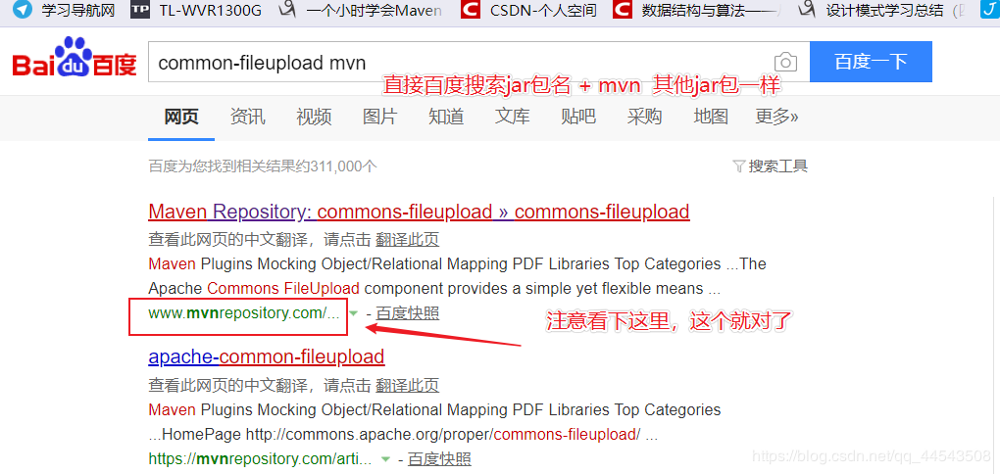
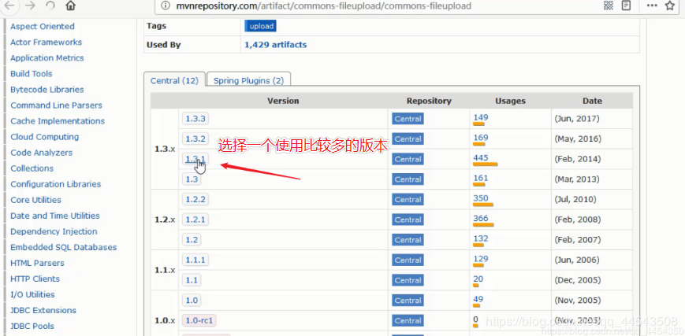
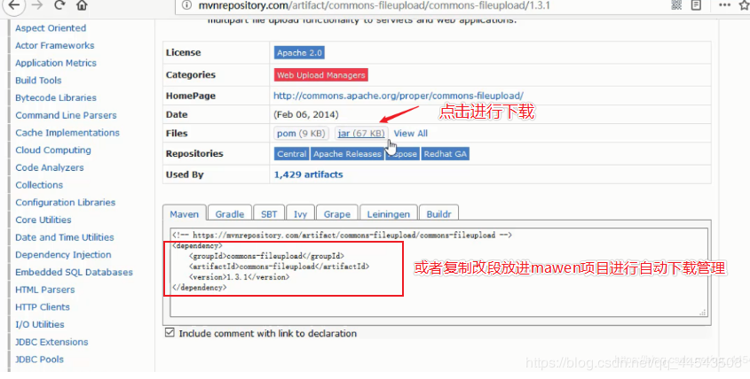
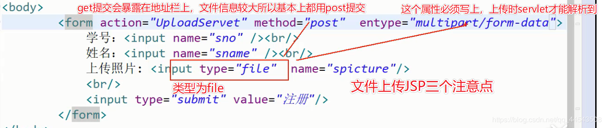
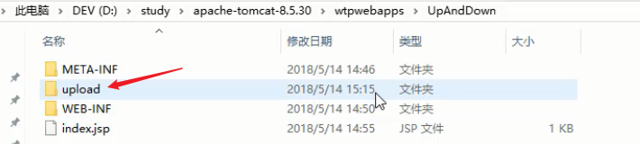
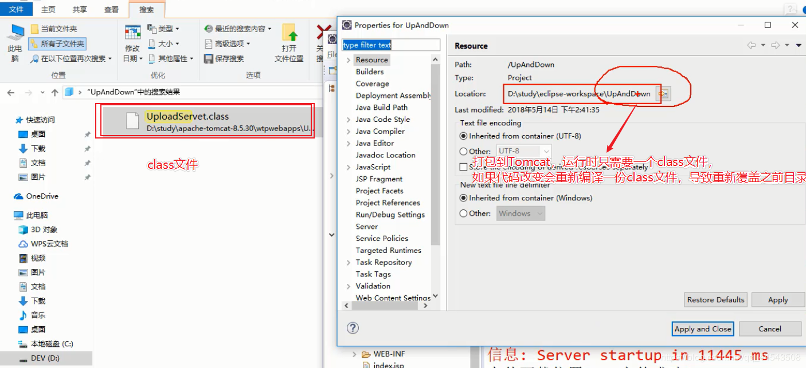
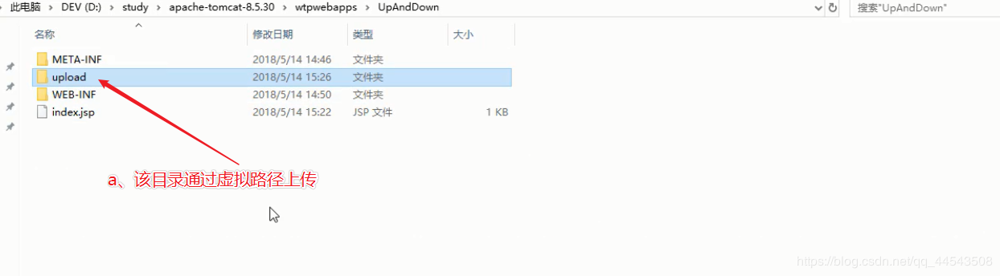
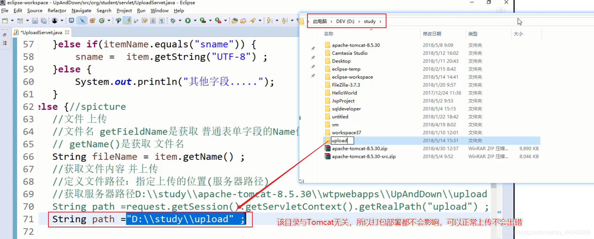
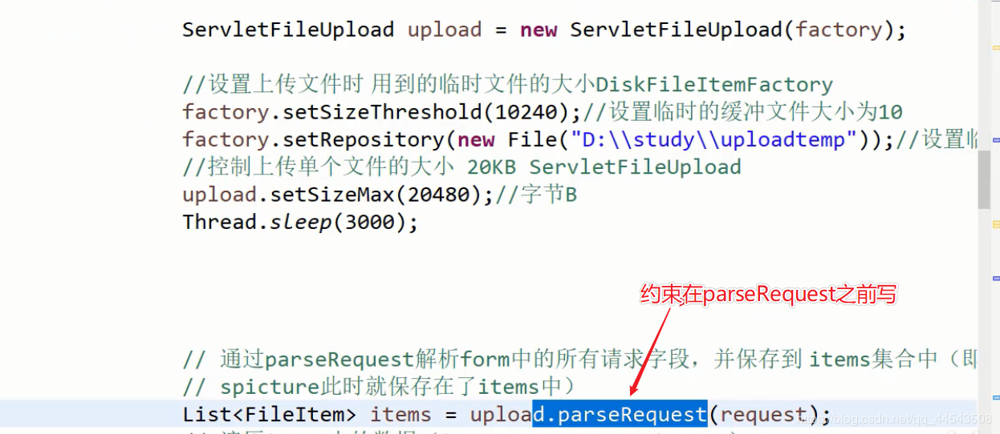

@
嘿，熊dei，你不得不知道在Web开发中，文件上传和下载功能是非常常用的功能，关于文件上传，浏览器上传【文件以流的形式传输】——>服务器端——>Servlet获取上传文件的输入流——>解析请求参数，这一系列过程下来我这佩奇脑壳都疼，因此我更推荐用apache的开源工具common-fileupload这个文件上传组件，common-fileupload上传组件的jar包可以去apache官网上面下载，也可以在struts的lib文件夹下面找到（不要问我为什么，因为就算你问我我也不会告诉你struts上传功能就是基于这个实现，当然你也不一定用过Struts【现在不用去学，用的少了】，再者你也不会这么闲去lib目录找），其次common-fileupload依赖于common-io包，所以需要一起下载使用！
jar包下载，可以直接搜索apche官网进行下载，不过现在比较流行mawen管理jar包(不懂mawen?加油吧，要学的东西还很多，mawen是一定要学的而且也很易学，用了mawen你就停不下来，这玩意太便捷了，学会了mawen，你就会明白妈妈为什么再也不用担心小明拿U盘去拷小红的jar包了)



这个时候common-fileupload依赖的common-io包同样的操作进行下载，之后创建项目，引入jar包
<%@ page language="java" contentType="text/html; charset=UTF-8"
pageEncoding="UTF-8"%>
<!DOCTYPE html PUBLIC "-//W3C//DTD HTML 4.01 Transitional//EN" "http://www.w3.org/TR/html4/loose.dtd">
<html>
<head>
<meta http-equiv="Content-Type" content="text/html; charset=UTF-8">
<title>Insert title here</title>
</head>
<body>
<form action="UploadServet" method="post" enctype="multipart/form-data">
学号：<input name="sno" /><br/>
姓名：<input name="sname" /><br/>
上传照片: <input type="file" name="spicture"/>
<br/>
<input type="submit" value="注册"/>
</form>
<a href="DownloadServlet?filename=MIME.png">MIME</a>
</body>
</html>
package org.student.servlet;
import java.io.File;
import java.io.IOException;
import java.util.Iterator;
import java.util.List;
import javax.servlet.ServletException;
import javax.servlet.http.HttpServlet;
import javax.servlet.http.HttpServletRequest;
import javax.servlet.http.HttpServletResponse;
import org.apache.commons.fileupload.FileItem;
import org.apache.commons.fileupload.FileItemFactory;
import org.apache.commons.fileupload.FileUploadBase;
import org.apache.commons.fileupload.FileUploadException;
import org.apache.commons.fileupload.disk.DiskFileItemFactory;
import org.apache.commons.fileupload.servlet.ServletFileUpload;
/**
* Servlet implementation class UploadServet
*/
public class UploadServet extends HttpServlet {
private static final long serialVersionUID = 1L;
public UploadServet() {
super();
}
/**
* @see HttpServlet#doGet(HttpServletRequest request, HttpServletResponse
* response)
*/
protected void doGet(HttpServletRequest request, HttpServletResponse response)
throws ServletException, IOException {
request.setCharacterEncoding("utf-8");
response.setCharacterEncoding("utf-8");
response.setContentType("text/html; charset=UTF-8");
// 上传
// request.getParameter("sname")
try {
boolean isMultipart = ServletFileUpload.isMultipartContent(request);
if (isMultipart) {// 判断前台的form是否有 mutipart属性
// FileItemFactory factory = new DiskFileItemFactory();
DiskFileItemFactory factory = new DiskFileItemFactory();
ServletFileUpload upload = new ServletFileUpload(factory);
//设置上传文件时 用到的临时文件的大小DiskFileItemFactory
factory.setSizeThreshold(10240);//设置临时的缓冲文件大小为10
factory.setRepository(new File("D:\\study\\uploadtemp"));//设置临时文件的目录
//控制上传单个文件的大小 20KB ServletFileUpload
upload.setSizeMax(20480);//字节B
Thread.sleep(3000);
// 通过parseRequest解析form中的所有请求字段，并保存到 items集合中（即前台传递的sno sname
// spicture此时就保存在了items中）
List<FileItem> items = upload.parseRequest(request);
// 遍历items中的数据（item=sno sname spicture）
Iterator<FileItem> iter = items.iterator();
while (iter.hasNext()) {
FileItem item = iter.next();
String itemName = item.getFieldName();
int sno = -1;
String sname = null;
// 判断前台字段 是普通form表单字段(sno sname)，还是文件字段
// request.getParameter() -- iter.getString()
if (item.isFormField()) {
if (itemName.equals("sno")) {// 根据name属性 判断item是sno sname 还是spicture?
sno = Integer.parseInt(item.getString("UTF-8"));
} else if (itemName.equals("sname")) {
sname = item.getString("UTF-8");
} else {
System.out.println("其他字段xxx.....");
}
} else {// spicture 123
// 文件 上传
// 文件名 getFieldName是获取 普通表单字段的Name值
// getName()是获取 文件名
String fileName = item.getName();//a.txt a.docx a.png
String ext = fileName.substring( fileName.indexOf(".")+1 ) ;
if(!(ext.equals("png") || ext.equals("gif") ||ext.equals("jpg"))) {
System.out.println("图片类型有误！格式只能是 png gif jpg");
return ;//终止
}
// 获取文件内容 并上传
// 定义文件路径：指定上传的位置(服务器路径)
// 获取服务器路径D:\\study\\apache-tomcat-8.5.30\\wtpwebapps\\UpAndDown\\upload
// String path =request.getSession().getServletContext().getRealPath("upload") ;
String path = "D:\\study\\upload";
File file = new File(path, fileName);
item.write(file);// 上传
System.out.println(fileName + "上传成功！");
return;
}
}
}
}
catch (FileUploadBase.SizeLimitExceededException e) {//SizeLimitExceededException是FileUploadException的一个子类
System.out.println("上传文件大小超过限制！最大20KB");
}
catch (FileUploadException e)
{
e.printStackTrace();
}
// 解析请求
catch (Exception e) {
// TODO Auto-generated catch block
e.printStackTrace();
}
}
/**
* @see HttpServlet#doPost(HttpServletRequest request, HttpServletResponse
* response)
*/
protected void doPost(HttpServletRequest request, HttpServletResponse response)
throws ServletException, IOException {
// TODO Auto-generated method stub
doGet(request, response);
}
}
#### 2.3 文件上传注意的问题：
1、为保证服务器安全，上传文件应该放在外界无法直接访问的目录下，比如放于WEB-INF目录下。
2、为防止文件覆盖的现象发生，要为上传文件产生一个唯一的文件名。
3、如果上传的目录在Tomcat目录中的wtpwebapps下的新建文件夹名为upload ，如下：

则需要注意：
3.1.如果修改代码，则在tomcat重新启动时 会被删除
原因：当修改代码的时候,tomcat会重新编译一份新的class 并且重新部署（重新创建各种目录）
3.2.如果不修改代码，则不会删除
原因： 没有修改代码，class仍然是之前的class

因此，为了防止 上传目录丢失： a.虚拟路径

b.直接更换上传目录到非tomcat目录

4、限制上传：限制类型、限制大小。注意 对文件的限制条件 写在parseRequest之前

下载：不需要依赖任何jar
a.请求（地址a form），请求Servlet
b.Servlet通过文件的地址 将文件转为输入流 读到Servlet中
c.通过输出流 将 刚才已经转为输入流的文件 输出给用户
注意：下载文件 需要设置2个 响应头：
response.addHeader("content-Type","application/octet-stream" );//MIME类型:二进制文件（任意文件）
response.addHeader("content-Disposition","attachement;filename="+fileName );//fileName包含了文件后缀：abc.txt文件下载代码：
package org.student.servlet;
import java.io.IOException;
import java.io.InputStream;
import javax.servlet.ServletException;
import javax.servlet.ServletOutputStream;
import javax.servlet.http.HttpServlet;
import javax.servlet.http.HttpServletRequest;
import javax.servlet.http.HttpServletResponse;
/**
* Servlet implementation class DownloadServlet
*/
public class DownloadServlet extends HttpServlet {
private static final long serialVersionUID = 1L;
/**
* @see HttpServlet#HttpServlet()
*/
public DownloadServlet() {
super();
// TODO Auto-generated constructor stub
}
/**
* @see HttpServlet#doGet(HttpServletRequest request, HttpServletResponse response)
*/
protected void doGet(HttpServletRequest request, HttpServletResponse response) throws ServletException, IOException {
request.setCharacterEncoding("utf-8");
//获取需要下载的文件名
String fileName = request.getParameter("filename") ;//form 、a href、 ...Server?a=b
//下载文件：需要设置 消息头
response.addHeader("content-Type","application/octet-stream" );//MIME类型:二进制文件（任意文件）
response.addHeader("content-Disposition","attachement;filename="+fileName );//fileName包含了文件后缀：abc.txt
//Servlet通过文件的地址 将文件转为输入流 读到Servlet中
InputStream in = getServletContext().getResourceAsStream("/res/MIME.png") ;
//通过输出流 将 刚才已经转为输入流的文件 输出给用户
ServletOutputStream out = response.getOutputStream() ;
byte[] bs = new byte[10];
int len=-1 ;
while( (len=in.read(bs)) != -1) {
out.write(bs,0,len);
}
out.close();
in.close();
}
/**
* @see HttpServlet#doPost(HttpServletRequest request, HttpServletResponse response)
*/
protected void doPost(HttpServletRequest request, HttpServletResponse response) throws ServletException, IOException {
// TODO Auto-generated method stub
doGet(request, response);
}
}
到这里，到了最开心的时刻了！！！关于文件上传下载的源码与笔记已经打包好了QnQ：
链接：https://pan.baidu.com/s/1oyyEkctcvY3AvTsJNkiuuQ 提取码：30e7